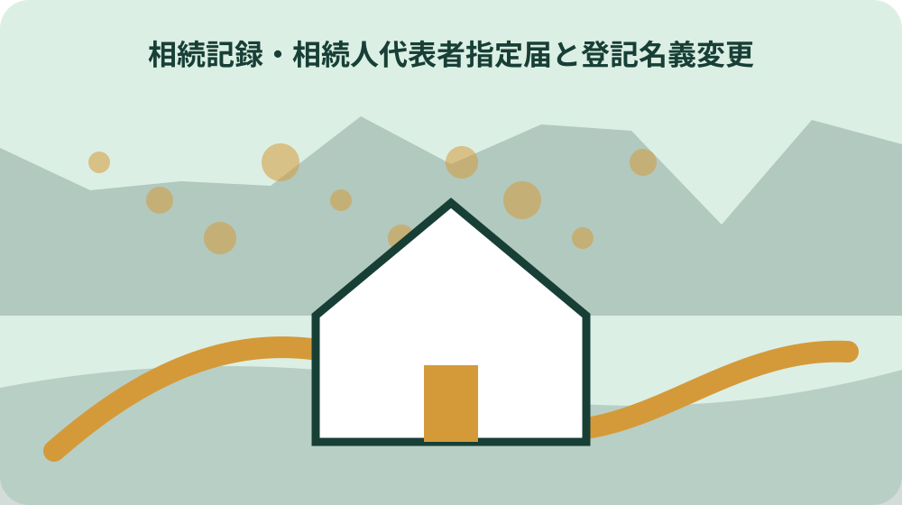
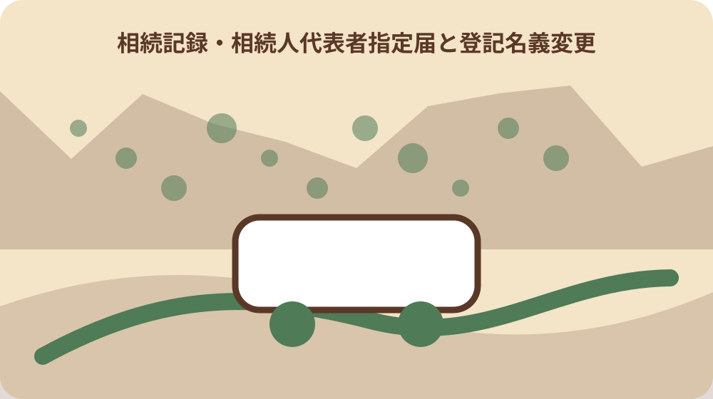

先に結論を確認する
この記事の答え：変わりません。森町の固定資産税関係様式と、法務局で行う相続登記は目的と受付先が異なります。
森町で最初に照合する条件：森町税務課へ出す相続人代表者指定届と、法務局へ出す相続登記を別行で管理する。
町の送付先届と法務局の名義変更を分ける
森町の固定資産税関係様式ページは、所有者が死亡した場合の様式として相続人代表者指定届を掲載している。相続人代表者指定届は森町の固定資産税様式として確認し、登記申請書と同じ書類にしない。森町側の欄には税務課資産税係、様式名、提出日を置き、法務局側の申請名と受付情報を混ぜない。
森町の相続人代表者指定届の受付先は固定資産税を扱う税務課資産税係である。町の受付先を税務課資産税係、登記の確認先を管轄法務局として連絡記録を二列にする。同じ故人でも土地、登記建物、未登記家屋で必要な確認が分かれるため、物件番号ごとに状態を残す。
法務省は2024年4月1日から相続登記の申請が義務になったと案内している。2024年4月1日の義務化は登記側の制度開始で、町様式の提出済み日へ読み替えない。期限は死亡日から機械的に作らず、取得を知った日、遺産分割日、制度開始前相続の経過期限を照合する。
森町のお悔やみ案内と固定資産税様式、法務局の相続登記は受付機関と目的が異なる。故人名、対象不動産、町への届出、登記申請を一物件ごとに分けて進捗を付ける。最後に未確認の相続人、物件、受付先を明記し、町への届出だけで登記名義が変わったと結論しない。
相続人代表者指定届の現行様式を取得する
同ページは相続人代表者指定届のPDF、Word、記入例PDFを別々に公開している。PDF、Word、記入例の役割を分け、記入例そのものへ個人情報を書き込まない。森町側の欄には税務課資産税係、様式名、提出日を置き、法務局側の申請名と受付情報を混ぜない。
森町の固定資産税関係様式ページは、所有者が死亡した場合の様式として相続人代表者指定届を掲載している。所有者死亡の見出しから取得し、似た名称の様式を検索結果だけで選ばない。同じ故人でも土地、登記建物、未登記家屋で必要な確認が分かれるため、物件番号ごとに状態を残す。
町外や国外への転出等で納税通知書を受け取れない場合の納税管理人申告・承認申請書は、相続人代表者指定届とは別様式である。町外転出者向け納税管理人の様式を死亡後の代表者指定へ流用しない。期限は死亡日から機械的に作らず、取得を知った日、遺産分割日、制度開始前相続の経過期限を照合する。
共有代表者を変更する場合の共有代表者変更届も、相続人代表者指定届とは別様式である。共有代表者変更届も目的が違うため、共有状態だけを理由に選ばない。最後に未確認の相続人、物件、受付先を明記し、町への届出だけで登記名義が変わったと結論しない。
故人名義の固定資産を町資料で確認する
森町の固定資産税関係様式ページは、所有者が死亡した場合の様式として相続人代表者指定届を掲載している。相続人代表者指定届の対象とする納税通知書、土地、家屋を年度付きで整理する。森町側の欄には税務課資産税係、様式名、提出日を置き、法務局側の申請名と受付情報を混ぜない。
未登記家屋の所有者を変更する場合、森町は未登記家屋所有者異動届出書を別に公開している。未登記家屋が含まれる場合は所有者異動届という別手続の要否を資産税係へ確認する。同じ故人でも土地、登記建物、未登記家屋で必要な確認が分かれるため、物件番号ごとに状態を残す。
森町の相続人代表者指定届の受付先は固定資産税を扱う税務課資産税係である。町への届出では固定資産税の対象物件と受付日を控え、登記識別情報と混在させない。期限は死亡日から機械的に作らず、取得を知った日、遺産分割日、制度開始前相続の経過期限を照合する。
森町のお悔やみ案内と固定資産税様式、法務局の相続登記は受付機関と目的が異なる。お悔やみ案内だけで物件一覧を確定せず、納税通知書や名寄せ情報を町へ照会する。最後に未確認の相続人、物件、受付先を明記し、町への届出だけで登記名義が変わったと結論しない。

代表者と不動産取得者を同一視しない
森町の固定資産税関係様式ページは、所有者が死亡した場合の様式として相続人代表者指定届を掲載している。納税通知書を受け取る代表者の記録と、不動産を相続で取得した人の記録を別欄にする。森町側の欄には税務課資産税係、様式名、提出日を置き、法務局側の申請名と受付情報を混ぜない。
相続人は不動産を相続で取得したことを知った日から3年以内に相続登記を申請する義務がある。登記期限の起点は不動産取得を知った日で、代表者指定届の提出日ではない。同じ故人でも土地、登記建物、未登記家屋で必要な確認が分かれるため、物件番号ごとに状態を残す。
遺産分割で不動産を取得した場合は、遺産分割の日から3年以内にその内容に応じた登記が必要である。遺産分割後の取得者が決まった日程は、分割日からの3年という別の起点で管理する。期限は死亡日から機械的に作らず、取得を知った日、遺産分割日、制度開始前相続の経過期限を照合する。
森町のお悔やみ案内と固定資産税様式、法務局の相続登記は受付機関と目的が異なる。誰が町の連絡を受け、誰が登記申請義務を負うかを物件ごとに確認する。最後に未確認の相続人、物件、受付先を明記し、町への届出だけで登記名義が変わったと結論しない。
三年の起算日を相続ごとに記録する
相続人は不動産を相続で取得したことを知った日から3年以内に相続登記を申請する義務がある。死亡日だけを一律の起算日にせず、取得を知った日を確認して根拠資料を付ける。森町側の欄には税務課資産税係、様式名、提出日を置き、法務局側の申請名と受付情報を混ぜない。
遺産分割で不動産を取得した場合は、遺産分割の日から3年以内にその内容に応じた登記が必要である。遺産分割で取得した物件は分割日を追加し、最初の三年期限と同じ欄へ上書きしない。同じ故人でも土地、登記建物、未登記家屋で必要な確認が分かれるため、物件番号ごとに状態を残す。
2024年4月1日より前に相続した未登記不動産は、原則として2027年3月31日までの対応が示されている。制度開始前の相続には2027年3月31日という経過期限があるため、古い相続も対象外にしない。期限は死亡日から機械的に作らず、取得を知った日、遺産分割日、制度開始前相続の経過期限を照合する。
正当な理由なく義務を履行しない場合、10万円以下の過料が科される可能性がある。過料の可能性を家族だけで断定せず、期限が近い物件は法務局や専門職へ確認する。最後に未確認の相続人、物件、受付先を明記し、町への届出だけで登記名義が変わったと結論しない。
町提出日を登記完了日にしない
森町の相続人代表者指定届の受付先は固定資産税を扱う税務課資産税係である。税務課の受付印は町様式の提出証跡であり、法務局の登記完了証とは分ける。森町側の欄には税務課資産税係、様式名、提出日を置き、法務局側の申請名と受付情報を混ぜない。
法務省は2024年4月1日から相続登記の申請が義務になったと案内している。義務化開始日と町様式の更新日を混ぜず、それぞれの資料日を記録する。同じ故人でも土地、登記建物、未登記家屋で必要な確認が分かれるため、物件番号ごとに状態を残す。
相続人は不動産を相続で取得したことを知った日から3年以内に相続登記を申請する義務がある。町へ先に出しても登記義務が終わるわけではないため、法務局側の状態を未着手のまま残す。期限は死亡日から機械的に作らず、取得を知った日、遺産分割日、制度開始前相続の経過期限を照合する。
森町のお悔やみ案内と固定資産税様式、法務局の相続登記は受付機関と目的が異なる。家族共有表では町受付、登記申請、登記完了を三つの状態にする。最後に未確認の相続人、物件、受付先を明記し、町への届出だけで登記名義が変わったと結論しない。
未登記家屋を土地登記と分けて確認する
未登記家屋の所有者を変更する場合、森町は未登記家屋所有者異動届出書を別に公開している。森町が公開する未登記家屋所有者異動届は、登記済み土地の相続登記とは別に確認する。森町側の欄には税務課資産税係、様式名、提出日を置き、法務局側の申請名と受付情報を混ぜない。
森町の固定資産税関係様式ページは、所有者が死亡した場合の様式として相続人代表者指定届を掲載している。固定資産税台帳上の家屋と法務局の登記簿上の建物が一致するかを物件単位で見る。同じ故人でも土地、登記建物、未登記家屋で必要な確認が分かれるため、物件番号ごとに状態を残す。
法務省は2024年4月1日から相続登記の申請が義務になったと案内している。相続登記義務の一般説明から未登記家屋の町手続を決めず、資産税係へ必要書類を尋ねる。期限は死亡日から機械的に作らず、取得を知った日、遺産分割日、制度開始前相続の経過期限を照合する。
森町のお悔やみ案内と固定資産税様式、法務局の相続登記は受付機関と目的が異なる。土地、登記建物、未登記家屋を三行に分け、対象外物件まで一括完了にしない。最後に未確認の相続人、物件、受付先を明記し、町への届出だけで登記名義が変わったと結論しない。
催告と過料の流れを期限管理へ反映する
正当な理由なく義務を履行しない場合、10万円以下の過料が科される可能性がある。10万円以下という上限だけを強調せず、正当な理由の有無を含む個別判断であることを残す。森町側の欄には税務課資産税係、様式名、提出日を置き、法務局側の申請名と受付情報を混ぜない。
登記官が義務違反を把握した場合はまず登記を促す催告を行い、期限内に登記されない場合に裁判所へ通知する流れが示されている。法務省が示す催告、期限内対応、裁判所通知の順序を、町からの納税通知と混同しない。同じ故人でも土地、登記建物、未登記家屋で必要な確認が分かれるため、物件番号ごとに状態を残す。
相続人は不動産を相続で取得したことを知った日から3年以内に相続登記を申請する義務がある。催告が届くまで待つ方法にせず、取得を知った日から三年を先に管理する。期限は死亡日から機械的に作らず、取得を知った日、遺産分割日、制度開始前相続の経過期限を照合する。
相続人申告登記は不動産の権利関係を公示するものではなく、相続登記そのものと同じ効果ではない。相続人申告登記をした状態も最終の権利関係公示とは別なので次の手続を確認する。最後に未確認の相続人、物件、受付先を明記し、町への届出だけで登記名義が変わったと結論しない。
相続人申告登記の効果を限定して記す
法務省は相続人申告登記を、早期の遺産分割が難しい場合に基本的義務を履行する制度として案内している。遺産分割が早期に難しいときの制度として確認し、通常の相続登記と同じ名称で記録しない。森町側の欄には税務課資産税係、様式名、提出日を置き、法務局側の申請名と受付情報を混ぜない。
相続人申告登記は不動産の権利関係を公示するものではなく、相続登記そのものと同じ効果ではない。基本的義務を履行する効果と、誰が不動産を取得したかを公示する効果を分ける。同じ故人でも土地、登記建物、未登記家屋で必要な確認が分かれるため、物件番号ごとに状態を残す。
相続人は不動産を相続で取得したことを知った日から3年以内に相続登記を申請する義務がある。申出日を取得日や遺産分割日へ置き換えず、三つの日付を保持する。期限は死亡日から機械的に作らず、取得を知った日、遺産分割日、制度開始前相続の経過期限を照合する。
遺産分割で不動産を取得した場合は、遺産分割の日から3年以内にその内容に応じた登記が必要である。遺産分割後にはその結果に応じた登記が必要かを法務局資料で再確認する。最後に未確認の相続人、物件、受付先を明記し、町への届出だけで登記名義が変わったと結論しない。

家族の原本・写しを提出先別に分ける
同ページは相続人代表者指定届のPDF、Word、記入例PDFを別々に公開している。町様式の原本、控え、記入例を分け、法務局提出書類の束へ混ぜない。森町側の欄には税務課資産税係、様式名、提出日を置き、法務局側の申請名と受付情報を混ぜない。
森町の固定資産税関係様式ページは、所有者が死亡した場合の様式として相続人代表者指定届を掲載している。相続人代表者指定届には森町受付日を、登記書類には法務局受付情報を付ける。同じ故人でも土地、登記建物、未登記家屋で必要な確認が分かれるため、物件番号ごとに状態を残す。
法務省は2024年4月1日から相続登記の申請が義務になったと案内している。制度説明の印刷物を申請済み証明とせず、完了書類を別ファイルにする。期限は死亡日から機械的に作らず、取得を知った日、遺産分割日、制度開始前相続の経過期限を照合する。
森町のお悔やみ案内と固定資産税様式、法務局の相続登記は受付機関と目的が異なる。故人一人でも不動産が複数なら、町税資料と登記資料を物件番号で照合する。最後に未確認の相続人、物件、受付先を明記し、町への届出だけで登記名義が変わったと結論しない。
既公開のお悔やみ手順と目的を重ねない
森町のお悔やみ案内と固定資産税様式、法務局の相続登記は受付機関と目的が異なる。お悔やみ手続全般ではなく、固定資産税の送付先と登記名義の差だけを本記事の対象にする。森町側の欄には税務課資産税係、様式名、提出日を置き、法務局側の申請名と受付情報を混ぜない。
森町の固定資産税関係様式ページは、所有者が死亡した場合の様式として相続人代表者指定届を掲載している。町の様式一覧から相続人代表者指定届を選び、保険や水道の名義変更を同じ完了欄にしない。同じ故人でも土地、登記建物、未登記家屋で必要な確認が分かれるため、物件番号ごとに状態を残す。
未登記家屋の所有者を変更する場合、森町は未登記家屋所有者異動届出書を別に公開している。未登記家屋の町届出は必要に応じて枝分かれさせ、一般のお悔やみチェックだけで済ませない。期限は死亡日から機械的に作らず、取得を知った日、遺産分割日、制度開始前相続の経過期限を照合する。
相続人は不動産を相続で取得したことを知った日から3年以内に相続登記を申請する義務がある。登記期限は法務省資料で別に確認し、町内手続の受付順から期限を推定しない。最後に未確認の相続人、物件、受付先を明記し、町への届出だけで登記名義が変わったと結論しない。
大石の視点：送付先が決まっても所有権移転は終わらない
森町の固定資産税関係様式ページは、所有者が死亡した場合の様式として相続人代表者指定届を掲載している。公的事実は町が代表者指定様式を公開し、国が相続登記を義務にしたことである。森町側の欄には税務課資産税係、様式名、提出日を置き、法務局側の申請名と受付情報を混ぜない。
相続人は不動産を相続で取得したことを知った日から3年以内に相続登記を申請する義務がある。大石は、納税通知の受取人が決まった時点で登記も完了したと思わない二列管理を勧める。同じ故人でも土地、登記建物、未登記家屋で必要な確認が分かれるため、物件番号ごとに状態を残す。
相続人申告登記は不動産の権利関係を公示するものではなく、相続登記そのものと同じ効果ではない。二列管理は私見による確認方法であり、相続人や権利割合を決める法的判断ではない。期限は死亡日から機械的に作らず、取得を知った日、遺産分割日、制度開始前相続の経過期限を照合する。
森町のお悔やみ案内と固定資産税様式、法務局の相続登記は受付機関と目的が異なる。個別の権利関係は法務局や必要な専門職へ確認し、町の受付控えだけを所有権資料にしない。最後に未確認の相続人、物件、受付先を明記し、町への届出だけで登記名義が変わったと結論しない。